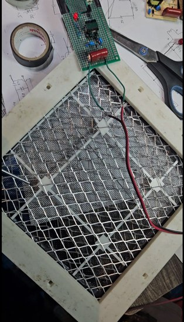
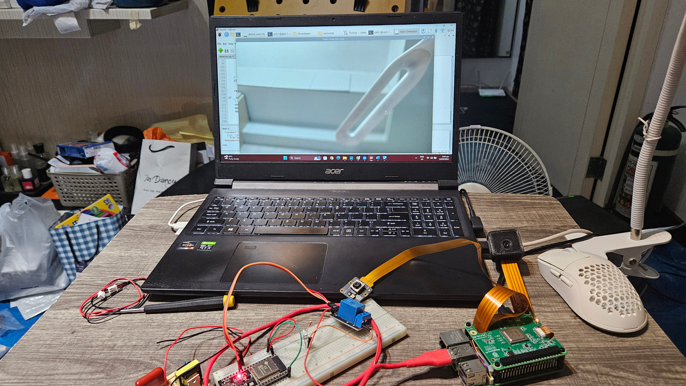
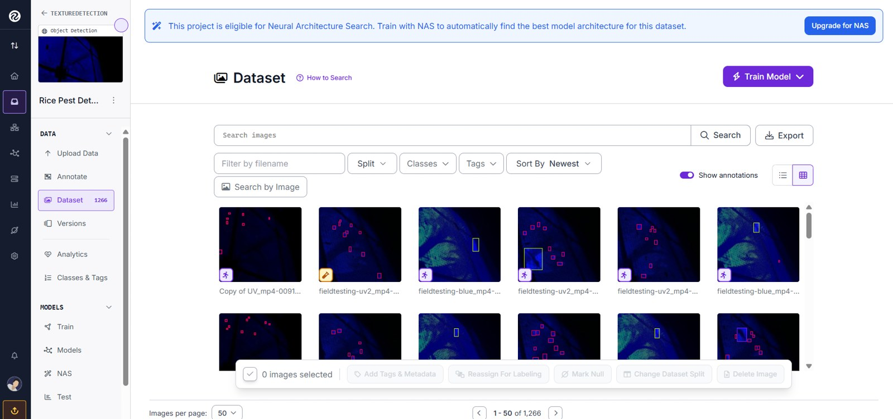

AI-Assisted Agricultural Pest Detection System
Developed an embedded AI monitoring system for real-time agricultural pest detection using lightweight YOLO-based computer vision, Raspberry Pi, sensors, and automation control. The project involved dataset preparation, annotation workflow, model training preparation, embedded deployment, and automated response integration.
PythonYOLOOpenCVRoboflowRaspberry PiEmbedded AI